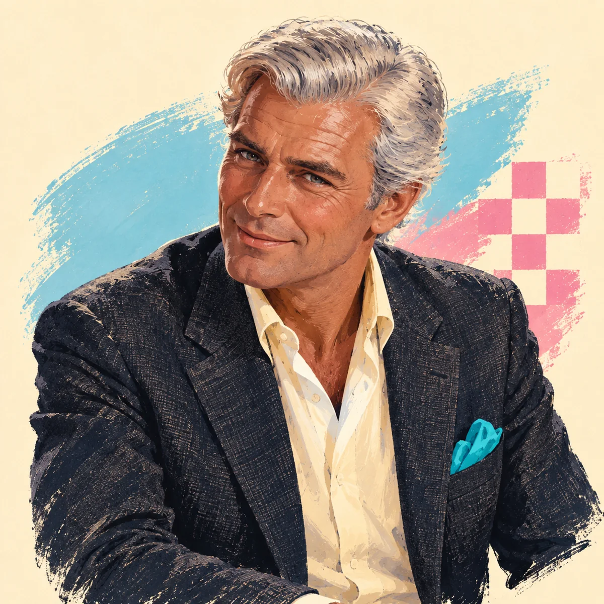

Angoloktatás és kiejtésfejlesztés
Beszélj magabiztosan és természetesen.
Gyakorold a hétköznapi és munkahelyi angolt, fejleszd a kiejtésedet, és fejezd ki magad magabiztosan.
Angol tanítás magyaroknak. Minden szinten.
Cambridge-i diploma · Clare College · Brit származás
Angoloktatás · Írás · Kiejtésfejlesztés
Szakterület: magyar–angol fordítás
Gyakorolj valódi beszélgetéseket, és tanulj angolul élvezetesen Markkal Budapesten. Találd meg a megfelelő szavakat, csiszold az akcentusodat és a kiejtésedet, és használd magabiztosabban az angolt. Angol nyelvű projekteddel is keresheted Markot, hogy világosan átadd a mondanivalódat.
Az első konzultáció ingyenes · Személyesen Budapesten
„Értem, de nem találom a szavakat.”
„Semmi gond, kezdjük egy beszélgetéssel.”

Illusztrált karakter, nem portré.
Markról
Brit származású, Cambridge-ben végzett tanár vagyok, több évtizedes tapasztalattal a képzésben, az oktatásban és az angol megértésének segítésében. Azért vagyok itt, hogy magabiztosabban beszélj angolul, vagy fejleszd az írásodat.
Van egy projektötleted? Mesélj róla, és ha tudok, örömmel segítek. Kezdjük egy ingyenes beszélgetéssel.
Szívesen találkozom a nyelvek iránt érdeklődőkkel, és nyitott vagyok új kapcsolatokra és együttműködésekre.
Kezdd egy ingyenes beszélgetéssel. Mesélj Marknak a tanulási céljaidról vagy a projektedről, és beszéljétek meg, miben segíthet.
Beszélj magabiztosan és természetesen.
Gyakorold a hétköznapi és munkahelyi angolt, fejleszd a kiejtésedet, és fejezd ki magad magabiztosan.
Világos mondanivaló. Magabiztos kommunikáció.
Segítség angol nyelvű dokumentumokhoz, cikkekhez és más szövegekhez, hogy a mondanivalód világos legyen, miközben megőrzi a saját hangodat.
Magyar gondolatok. Természetes angolság.
Fordítás és segítség az angol megfogalmazásban a projektjeidhez, a munkádhoz és a mindennapokhoz.
Kreatív segítség. Átgondolt szerkesztés.
Segítség forgatókönyvíráshoz, szerkesztéshez és átnézéshez filmes, televíziós, könyves és audioprojektekben. Nyitott az együttműködésre angol nyelvű munkákban és magyar alapanyagból készülő projektekben.
Angol kiejtés · Jó beszélgetések · Professzionális prezentációk · Segítség angol projektekhez
Angol nyelvi segítség az életedhez és a projektjeidhez, amikor szükséged van rá.
Nehezen öntöd szavakba az ötleteidet a munkahelyeden?
Gyakorold a mondanivalód kifejtését, a kérdezést és a spontán válaszokat.
Szólj hozzá magabiztosabban, és tedd könnyebben követhetővé az ötleteidet.
Beszélj erről Markkal ↗Nem elég világos vagy természetes az angol szöveged?
Dolgozz Markkal a szerkezeten, a megfogalmazáson és a célközönséghez illő hangnemen.
Add át világosabban a mondanivalódat, a saját hangod megőrzésével.
Beszélj erről Markkal ↗Ismered az erősségeidet, de angolul nehéz beszélned róluk?
Próbáld el a válaszaidat, rendezd a példáidat, és gyakorold a tiszta kiejtést.
Mutasd be magabiztosabban a tapasztalatodat, és kelts jobb első benyomást.
Beszélj erről Markkal ↗Attól tartasz, hogy egyhangúan beszélsz, vagy elveszíted a mondanivalód fonalát?
Gyakorold a ritmust, a hangsúlyt, az áttekinthető felépítést és a kérdések megválaszolását.
Tedd követhetőbbé az ötleteidet, és fejezd ki magad színesebben.
Beszélj erről Markkal ↗Világosabb prózára vagy természetesebb párbeszédekre van szüksége a történetednek?
Nézd át Markkal a kéziratodat vagy forgatókönyvedet, a nyelvre, a gördülékenységre és a párbeszédekre összpontosítva.
Formálj olvasmányosabb szöveget, amely megőrzi az alkotói hangodat.
Beszélj erről Markkal ↗Bizonytalan vagy egy beszélgetés elkezdésében vagy folytatásában?
Gyakorold a bemutatkozást, a visszakérdezést és a hétköznapi kifejezéseket oldott környezetben.
Fogadd felszabadultabban az embereket, és kapcsolódj be könnyebben a beszélgetésbe.
Beszélj erről Markkal ↗Illusztrált helyzetek, nem ügyfelekről készült fényképek.
Személyes órák magyar tanulóknak, beszélgetéssel és kiejtésfejlesztéssel.
Írói segítség és szerkesztés angol nyelvű forgatókönyvekhez és magyar alapanyagból készülő projektekhez.
Cikkek magazinoknak és vállalkozásoknak, valamint műszaki szövegírás.
Természetes angol megfogalmazás magyar szövegekhez és projektekhez.
Segítség az ötletek kidolgozásában és kézirattá formálásában.
Világosabb fogalmazás, jobb szerkezet, megfelelő hangnem és könnyebb olvashatóság.
A következő lépés
Egyeztessünk egy ingyenes első konzultációt telefonon vagy személyesen Budapesten. Írd meg Marknak e-mailben vagy SMS-ben, miben kérsz segítséget, és egyeztessetek egy időpontot.
Kezdésnek néhány sor is elég.
Küldd el az írással, szerkesztéssel vagy fordítással kapcsolatos ötleteidet. Mondd el, mire gondoltál, és megbeszéljük a feladatot, a díjat és az időzítést.